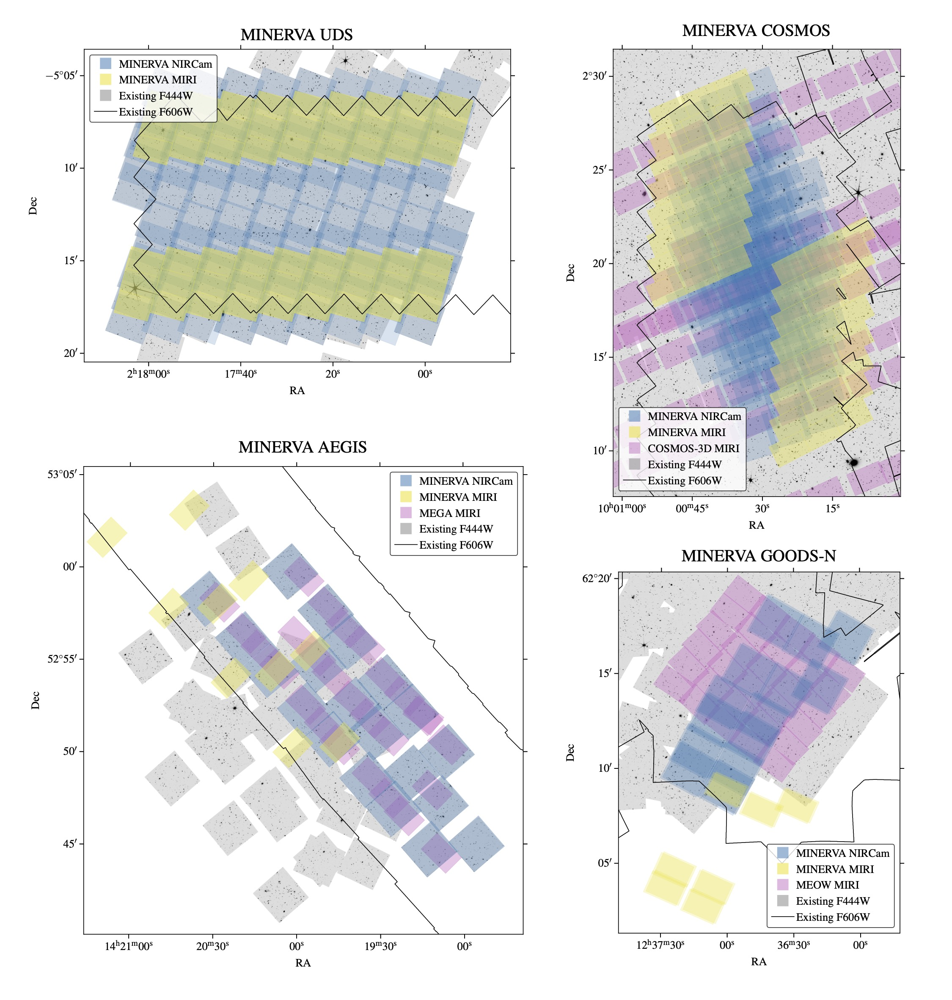

Survey Overview
MINERVA is a 260hr (prime) and 127hr (parallel) JWST Cycle 4 treasury program. We will obtain 8 filter NIRCam medium band imaging (F140M, F162M, F182M, F210M, F250M, F300M, F360M, F460M) and 2 filter MIRI imaging (F1280W, F1500W) in four of the five CANDELS Extragalactic fields: UDS, COSMOS, AEGIS and GOODS-N. These fields were previously observed in Cycle 1 with 7 - 9 NIRCam broadbands by the PRIMER, CEERS and JADES programs. MINERVA increases the area of existing JWST medium-band coverage by ~7x, to ~542 arcmin^2, and when combined with existing imaging will provide a photometric catalog with a total of 20-26 JWST filters (depending on field) and 26-35 filters total, including HST.
The field layouts, including existing imaging from JWST and HST, are shown below. Further details about previous programs targeting these fields can be found in our survey paper.
Our primary science goals include shedding light on the physics of enigmatic sources hiding in current broad-band catalogs, improving systematics on stellar mass functions and number densities by factors of >=3, and resolved mapping of stellar mass and star formation at 1 < z < 6. When combined with existing surveys, MINERVA is poised to become a treasury photometric dataset that will enable population studies with well-understood completeness, robust photometric redshifts, stellar masses and sizes, and facilitate spectroscopic follow-up for decades to come.